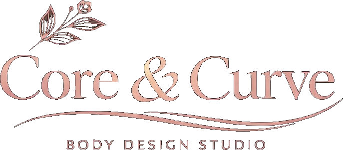
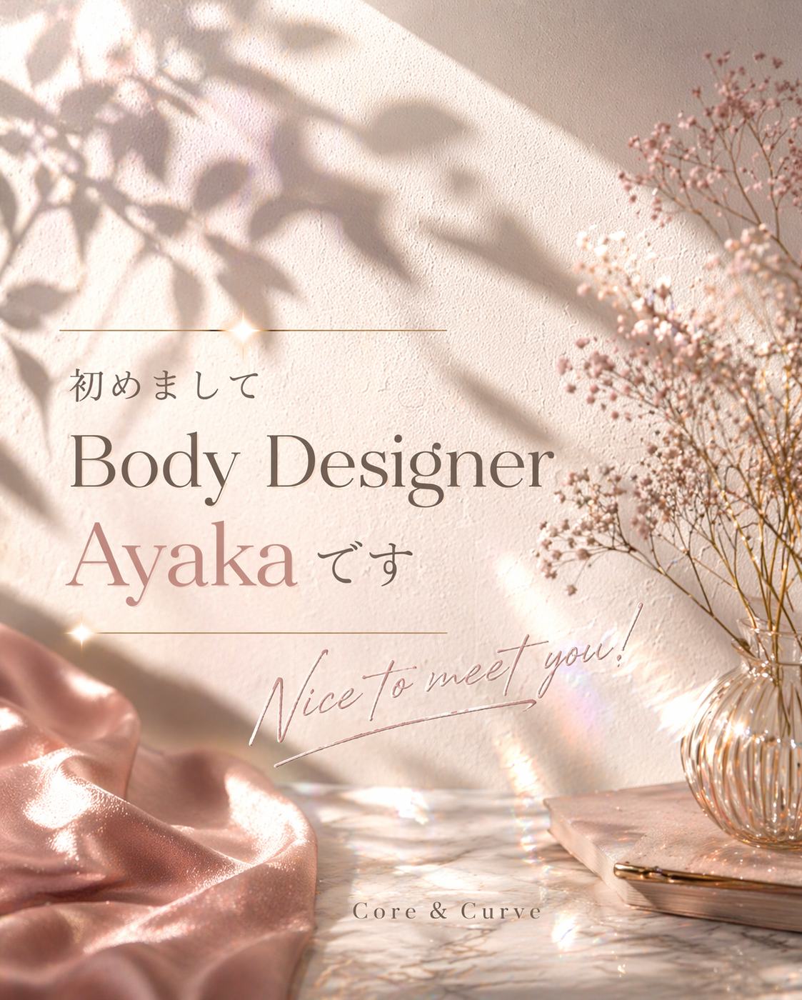
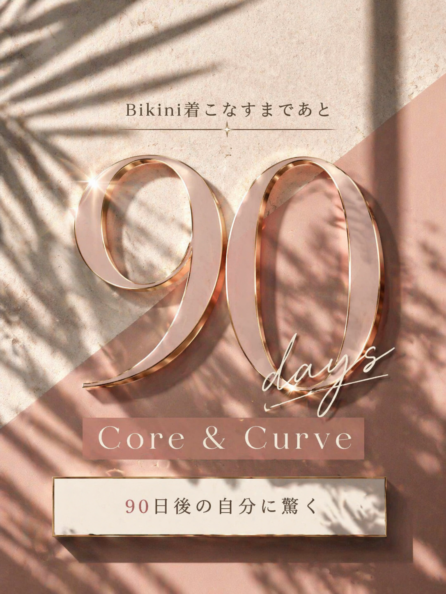
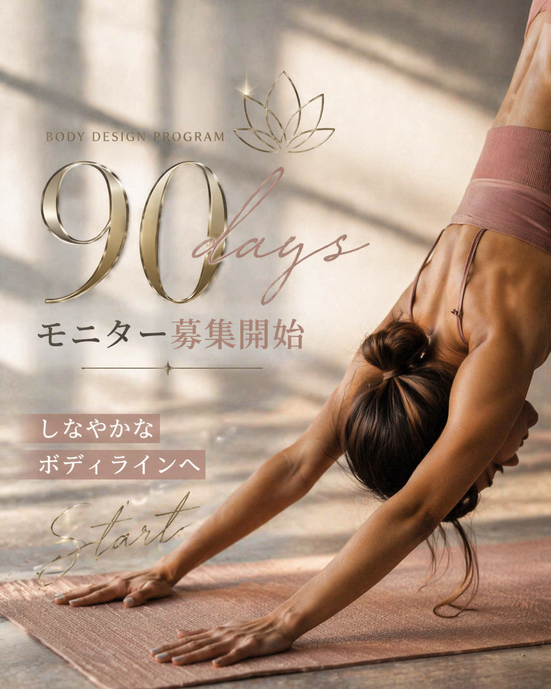

頑張る腹筋はもうやめる
整えるだけで
女性の身体は変わる
忙しくても
私史上最高の身体へ。

To You「なりたかった私」を今からー。
家族や仕事のために走り続け、
自分のことは、いつも後回し。
ふと鏡で見つけた姿勢の崩れや、
きつくなった服に、
心のどこかでブレーキを感じていませんか？
年齢を重ねていくのかな…」
心の底に隠した “女性としての自分” を、
もう一度、取り戻しませんか？
疲れやすいのは、年齢のせいではなく、
すべてを一人で抱え込んでいるから。
あなたの身体は、あなただけのものじゃない。
子供に心からの笑顔を向けるために。
家族とずっと健康に過ごすために。
そして、あなた自身が「自分」らしく、
もっと輝くために。
自分を後回しにする日々を、
今日で終わりにしましょう。
Method産後の絶望から辿り着いた”整える”メソッド

はじめまして、
ayakaです、
私自身、三兄弟の出産後に体は激変。
「どうしてこの体は壊れていくの？」と
絶望すら感じる日々を送っていました。
時間のないママに、
激しい運動や食事制限なんて無理。
私もそうでした。
だからこそ、
きつい我慢ではなく、
「1日たった5分の、自分を感じて整える時間」
から始めました。
その小さな聖域が、
やがて心と身体を変える大きな力になったのです。
◆ 身体を取り戻したママたちの記録
Y様（産後6週間チャレンジ受講）
Q. 受講の決め手は？
自宅で受けれる点や、身体の不調に合わせて指導して頂けるのが魅力でした。
Q. 身体の変化はありましたか？
身体が軽くなった感じがして、洋服にも少しゆとりができました！
Q. 内容は続けやすかったですか？
難しい動きはなかったので、空いた時間に続けています。
「にこにこ笑顔がかわいくて、毎週楽しかったです！運動音痴な私にもわかりやすく説明して貰えました」
下腹・ヒップ・太もも すべて -4.5cm
A様（産後6週間チャレンジ受講）
Q. 受講してみての感想は？
自分の気になる部分や体調に合わせたプログラムを組んでもらえたのが良かったです。
Q. 意識の変化はありましたか？
自転車をこいだり散歩するときも、どこを動かしているのか意識するようになりました！姿勢も気を付けています。
Q. 続けられそうですか？
続けたいです！子供がいても自宅でできるのはすごく嬉しいです。
「同じママさんなのでお話しやすく、忘れてしまった時も繰り返し丁寧に教えていただけてありがたかったです」
二の腕・太もも -1.7cm
産後から何年経っていても、
変わるのに遅すぎることはありません。
あなたの悩みに寄り添い、
あなたの生活に合わせた、
あなただけの「整える習慣」を
一緒に見つけます。
忙しくても、
あなたは、ちゃんと変われる。
DiagnosisBikini Body診断（無料）
まずは、今の身体の状態を
チェックしてみましょう
Peak Goal自信を取り戻した、その先へ。

「整える習慣」を手に入れ、
身体の軽さを思い出したとき。
きっとあなたは
「もっと別の服が着たい」
「もっと自分を楽しみたい」と
少し欲張りになっているはずです。
Bikini Body Project 2026
体型を理由に、服を諦めない。写真に写る自分が好きになる。
「お母さん、かっこいい！」と
子供たちに自慢される自分へ。
これは、単なるダイエットではありません。
女性としての自分へのご褒美となる、
特別な90日間です。
90日間プログラム内容
- 食事指導
（個別カロリー・生活に合わせた現実的プラン） - トレーニングプラン
（自宅＆ジム・動画・フォームチェック） - 姿勢・お腹改善
（反り腰改善・腹圧再教育） - メンタルコーチング
（停滞期対策・ホルモン対策）
「Core&Curve」は、
その第一歩を応援します。
Plans3つのコース
- LINEフルサポート
- 個別食事表＆トレ設計
- 月3回Zoomセッション
- 対面セッション（月4回）
- オンラインサポート
- フォーム動画添削
- 大会同行サポート
- マッスルコントロール・ポージング
- 完全個別メンタルサポート
FAQよくある質問
一人一人のレベルに合わせて、
完全に個別設計いたします。
あなたの「変わりたい」をサポートする、
生活に合わせたプランをご提案します。
外食やご家族とのご飯も両立可能です。

「もしかして、私のこと？」
そう感じたあなたへ。
変わっていくのは特別な人じゃありません。
自分を大切にする習慣を持った人だけです。
第1期生限定モニター募集
▶ 4月スタート予定（先着5名限定）
▶ 開発協力モニターにあたり30％OFF
※満席になり次第、次回募集は値上げ予定
気になること、
お話してみませんか？